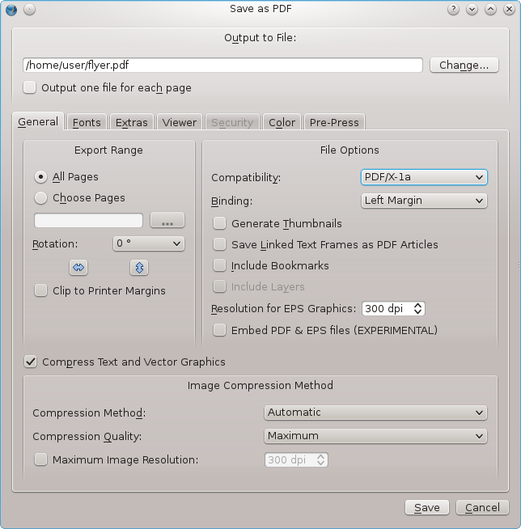
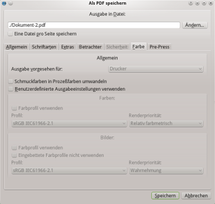
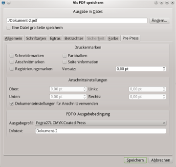

Die Ausgabe von PDF-Dateien für den kommerziellen Druck war in der Vergangenheit ziemlich fehleranfällig, besonders wenn Anwender nicht mit den Feinheiten von PostScript, dem »Destillieren« von PDFs und den verschiedenen Leistungsmerkmalen von Plattenbelichtern oder Digitaldruckmaschinen vertraut waren. Die Redensart »Es ist schwer, eine gute PDF-Datei zu erzeugen, aber kinderleicht, es zu vermasseln«, enthält mehr als nur Körnchen Wahrheit. Die typischen Anwendungsfälle für den Acrobat Distiller erforderten normalerweise die Kenntnis wenigstens einiger der beinahe hundert Distiller-Optionen.
Mit PDF/X sollte unter anderem Endanwendern und Vorstufenexperten ein herstellerneutraler Maßstab an die Hand gegeben werden, anhand dessen sie Dateien auf ihre Tauglichkeit für professionellen Druck oder dem Austausch mit Service-Büros überprüfen können. Im wesentlichen handelt es sich bei PDF/X-Dateien um PDFs, die nur eine Untermenge von PDF-Optionen zulassen und andere Optionen zur Pflicht machen.
In europäischen Ländern ist PDF/X weiter verbreitet als in Nordamerika. Es waren vor allem deutsche und Schweizer Firmen, die hinter der Durchsetzung dieses Konzepts standen, weil viele von ihnen Weltmarktführer im Bereich Drucktechnik sind.
http://www.pdf-x.com/downloads/pdf/application_notes_pdfx3.pdf
Scribus macht es seinen Anwendern leicht, PDF-Dateien zu exportieren, die zu 100 % den PDF-Spezifikationen PDF/X-1a bzw. PDF/X-3 entsprechen, indem es die Ausgabe fehlerhafter Dateien gar nicht erst zuläßt.
Bevor Sie nach PDF/X-1a or X-3 exportieren, sollten Sie sicherstellen, daß Ihre Druckerei oder ein anderer Dienstleister auch wirklich mit PDF/X umgehen kann, was nicht selbstverständlich ist.
Kurze Antwort: Wenn Ihre Druckerei PDF/X-1a-Dateien verlangt, was bei vielen Print-on-demand-Dienstleistern der Fall ist. In Nordamerika ist PDF/X-1a darüber hinaus auch in traditionellen Druckereien üblich.
Der Nachteil von PDF/X-1a ist der Mangel an Kontrolle in bezug auf die Farbgenauigkeit, insbesondere bei CMYK-Farben. Um gute Druckergebnisse zu erzielen, ist ein guter Informationsaustausch zwischen Ihnen und der Druckerei erforderlich. Am besten statten Sie Ihrem Druckdienstleister einen Besuch ab, bevor Sie Ihre PDF/X-1a-Datei ausgeben. Beachten Sie auch, daß RGB-Farben in PDF/X-1a-Dateien nicht zulässig sind und Scribus deswegen alle RGB-Werte auf der Grundlage eines Farbprofils nach CMYK umrechnet.
Bleibt die Frage, welches Farbprofil Sie verwenden sollten. Hier gibt es grundsätzlich zwei Möglichkeiten: Entweder Ihre Druckerei stellt Ihnen das passende Profil zur Verfügung, oder Sie verwenden (in Absprache mit der Druckerei) ein Standardprofil von Organisationen wie SWOP oder ECI.
Aktivieren Sie das Farbmanagement in den Dokumenteinstellungen, und stellen Sie sicher, daß Sie das richtige Farbprofil ausgewählt haben. Ohne aktiviertes Farbmanagement steht Ihnen die Ausgabeoption »PDF/X-1a« nicht zur Verfügung. Gehen Sie anschließend auf Datei > Exportieren > Als PDF speichern … oder klicken Sie auf das PDF-Symbol in der Werkzeugleiste.
Der folgende Reiter wird Ihnen nun als erstes präsentiert, und Sie müssen unter »Kompatibilität« »PDF/X-1a« auswählen. Dies führt dazu, daß einige Grundeinstellungen automatisch angepaßt werden.
|  |
Klicken Sie nun auf den Reiter »Farbe«:
|  |
Sie sehen, daß hier die Option »Ausgabe vorgesehen für:« ausgegraut ist, denn im Falle von PDF/X-1a ist »Drucker« (d.h. CMYK) das einzig Mögliche. Aus dem gleichen Grund ist es im Gegensatz zu PDF/X-3 nicht möglich, alternative RGB-Farbprofile für Bilder und Füllfarben zuzuweisen.
Klicken als nächstes auf den Reiter »Pre-Press«:
|  |
Hier können Sie die Ausgabebedingung (d.h. das Farbprofil) ändern, sofern es von den Voreinstellungen für das Dokument abweichen soll. Sie können außerdem einen Kurzkommentar (»Infotext«) zu dem Dokument hinzufügen. Dieses Feld darf laut PDF/X-1a-Spezifikation nicht leer bleiben, und Scribus blockiert das Speichern, bis Sie es ausgefüllt haben. In diesem Reiter können Sie zudem weitere Pre-Press-Optionen wie Schneidemarken oder Farbbalken hinzufügen, sollten dies aber nur dann tun, wenn Ihre Druckerei es ausdrücklich wünscht.
Beachten Sie, daß einige PDF-Optionen wie Verschlüsselung, PDF-Anmerkungen oder Präsentationseffekte nicht zur Verfügung stehen, weil die PDF/X-1a-Spezifikation diese nicht zuläßt. Außerdem werden Schriften automatisch eingebettet bzw. in Kurven umgewandelt, und Transparenzen können nicht exportiert werden.